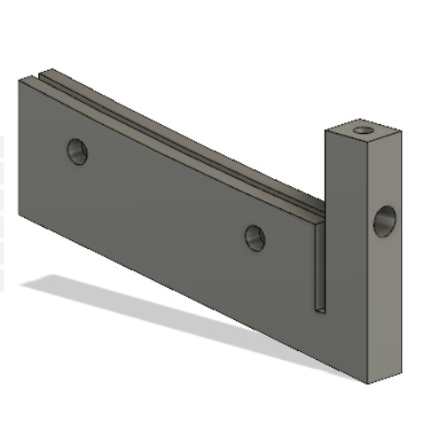
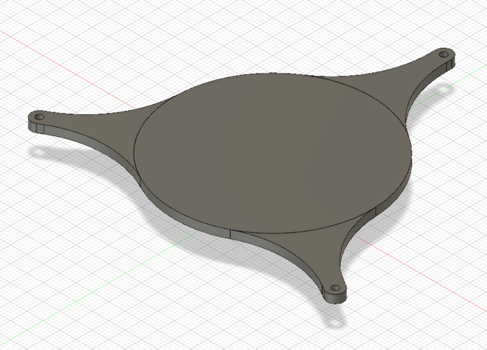
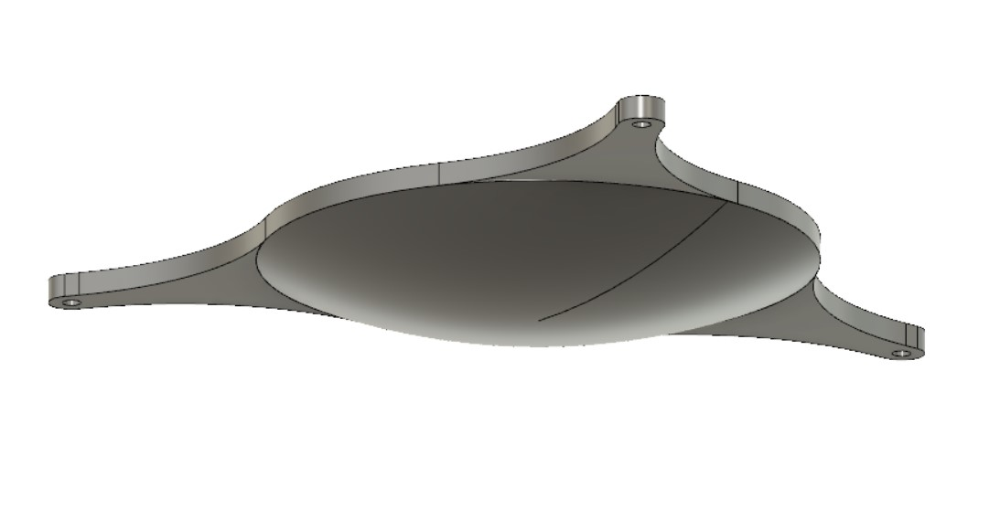

### Week 13: Bounce Mirror and Printing
This week, we workled on creating joint attachments that would go in between each mirror dish section, providing a place to secure the mirror to the light pipe, and also providing surfaces to connect the bounce mirror to.

I also created a bounce mirror, with supports added that will allow rods to connect to the mirror and hold up the bounce mirror.


6 brackets will be 3D printed. The bounce circular part of the bounce mirror will be printed, with the joint attachment parts being lasercut and attached separately.
And here is a [link to the home page](../index.html).